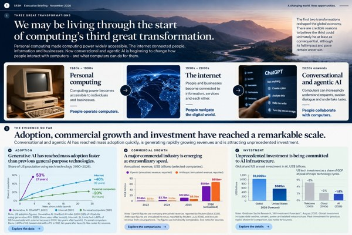
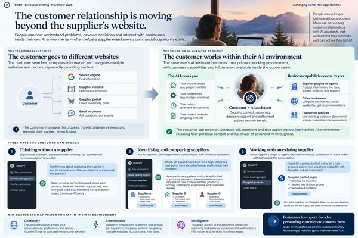
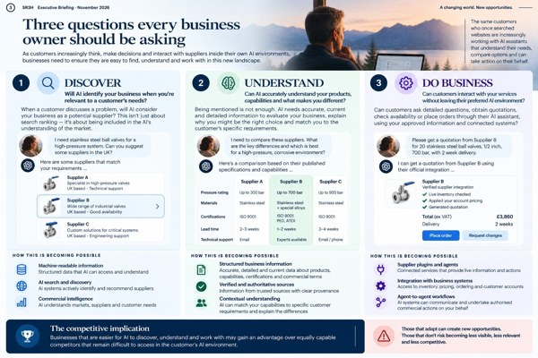
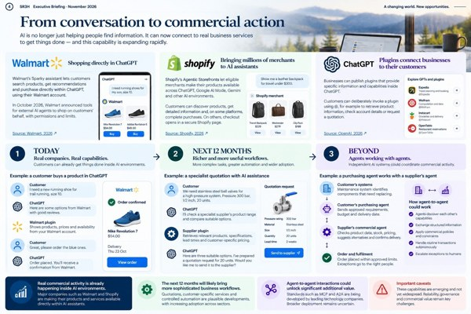
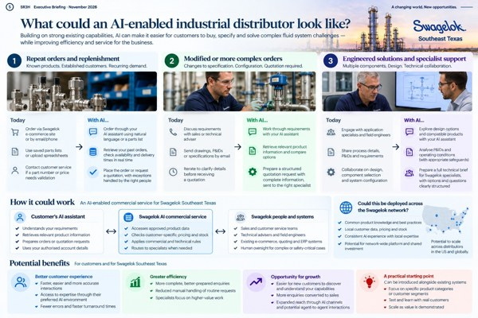
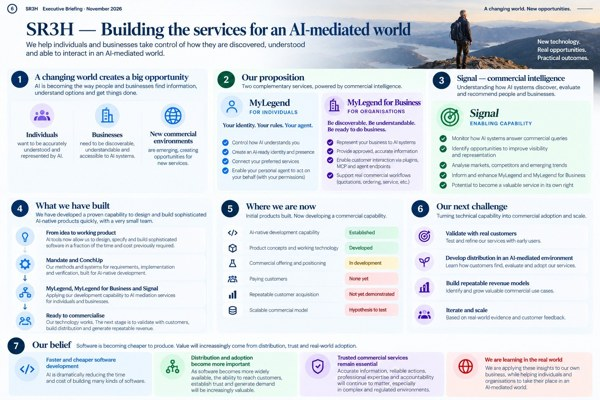

Chris Jones —
SR3H Executive Briefing
A changing world.
New opportunities.
Chris, a look at the changes shaping customer relationships, industrial distribution and SR3H.
Start the briefing Continue reading →“We may be living through the start of computing’s third great transformation.”
Choose a chapter.
Read from the beginning, or choose any topic below.
Open any chapter. Explore the details as you go.

Computing’s third great transformation
The scale of adoption, commercial growth and investment, and what the evidence does and does not establish.
Read chapter
The customer relationship is changing
How customers can explore problems and work with suppliers within their chosen AI environment.
Read chapter
Three questions for every business
Discover, Understand and Do Business.
Read chapter
From conversation to commercial action
What exists today, what may develop next and what remains speculative.
Read chapter
The AI-enabled industrial distributor
Potential applications for Swagelok Southeast Texas.
Read chapter
SR3H’s response
MyLegend, MyLegend for Business, Signal and the commercial challenge ahead.
Read chapterRead offline.
Six chapters, glossary and sources. One PDF.